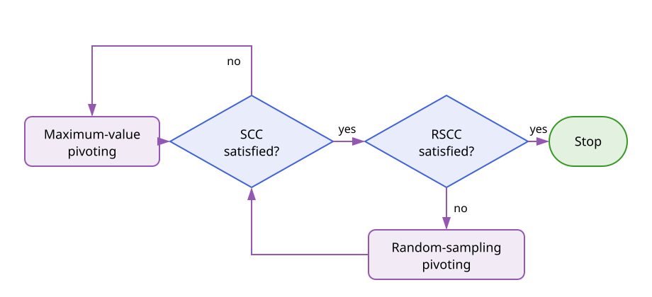

Adaptive Cross Approximation
Adaptive Cross Approximation (ACA) constructs a low-rank approximation from a small number of rows and columns of a matrix. This section introduces the factorization, the pivoting strategies, and the convergence criteria independently of the operator that produced the matrix [1, 3, 6].
Low-Rank Factorization
Let
\[\boldsymbol{\mathsf A} \in \mathbb{K}^{m \times n}, \qquad \mathbb{K} \in \{\mathbb{R},\mathbb{C}\}.\]
After $k$ iterations, ACA represents $\boldsymbol{\mathsf A}$ by
\[\widetilde{\boldsymbol{\mathsf A}}_k = \boldsymbol{\mathsf U}_k \boldsymbol{\mathsf V}_k = \sum_{\ell=1}^{k} \boldsymbol u_\ell \boldsymbol v_\ell^{\mathsf T},\]
where $\boldsymbol{\mathsf U}_k = [\boldsymbol u_1,\ldots,\boldsymbol u_k] \in \mathbb{K}^{m\times k}$ and $\boldsymbol{\mathsf V}_k = [\boldsymbol v_1,\ldots,\boldsymbol v_k]^{\mathsf T} \in \mathbb{K}^{k\times n}$. The corresponding residual matrix is
\[\boldsymbol{\mathsf R}_k = \boldsymbol{\mathsf A} - \widetilde{\boldsymbol{\mathsf A}}_k, \qquad \boldsymbol{\mathsf R}_0 = \boldsymbol{\mathsf A}.\]
Only selected rows and columns of $\boldsymbol{\mathsf A}$ are evaluated. Given a row index $i_k$, the $k$th step evaluates the residual row
\[\widehat{\boldsymbol v}_k^{\mathsf T} = \boldsymbol{\mathsf A}[i_k,:] - \sum_{\ell=1}^{k-1} u_\ell(i_k)\boldsymbol v_\ell^{\mathsf T}.\]
A column index $j_k$ is selected from this row and the pivot is $p_k=\widehat v_k(j_k)$. For $p_k\neq0$, the new factors are
\[\boldsymbol v_k^{\mathsf T} = \frac{\widehat{\boldsymbol v}_k^{\mathsf T}}{p_k}, \qquad \boldsymbol u_k = \boldsymbol{\mathsf A}[:,j_k] - \sum_{\ell=1}^{k-1} v_\ell(j_k)\boldsymbol u_\ell.\]
Consequently, the selected residual row and column vanish after the rank-one update. If $\boldsymbol{\mathsf A}$ has exact rank $r$ and no zero pivot is encountered, the residual is zero after $r$ steps. ACA performs this row-first procedure; ACAᵀ is its column-first transpose dual.
For a numerical rank $k \ll \min(m,n)$, the factors require $k(m+n)$ entries. With partial pivoting, their construction requires $\mathcal{O}(k^2(m+n))$ arithmetic operations and only $\mathcal{O}(k(m+n))$ entries of the original matrix are evaluated [1, 3].
Pivoting Strategies
The rank-one construction is fixed by the selected pivot pairs $(i_k,j_k)$. Pivoting strategies differ in how they obtain these indices without assembling the complete residual matrix.
Full Pivoting
The ideal algebraic choice is the largest entry of the complete residual:
\[(i_k,j_k) = \operatorname*{arg\,max}_{\substack{i\notin I_{k-1}\\j\notin J_{k-1}}} \left|[\boldsymbol{\mathsf R}_{k-1}]_{ij}\right|,\]
where $I_{k-1}=\{i_1,\ldots,i_{k-1}\}$ and $J_{k-1}=\{j_1,\ldots,j_{k-1}\}$. This gives a strong pivot but requires access to all remaining residual entries. It therefore loses the main advantage of ACA when matrix entries are expensive to evaluate. FullPivoting implements this reference strategy for an already assembled dense matrix.
Partial Pivoting
MaximumValue implements the standard partial-pivoting strategy. Given $i_k$, it selects
\[j_k = \operatorname*{arg\,max}_{j\notin J_{k-1}} \left|[\boldsymbol{\mathsf R}_{k-1}]_{i_kj}\right|.\]
After the corresponding residual column has been evaluated, the next row is
\[i_{k+1} = \operatorname*{arg\,max}_{i\notin I_k} \left|[\boldsymbol{\mathsf R}_{k-1}]_{ij_k}\right|.\]
Thus, every search is restricted to one already evaluated row or column. Partial pivoting is inexpensive and is the default strategy. It is not globally rank-revealing, however: a small update only describes the currently visited part of the residual and does not prove that the complete residual is small.
For example, consider a matrix with the block structure
\[\boldsymbol{\mathsf A} = \begin{pmatrix} \boldsymbol{\mathsf 0} & \boldsymbol{\mathsf A}_{12}\\ \boldsymbol{\mathsf A}_{21} & \boldsymbol{\mathsf 0} \end{pmatrix}.\]
Starting in one block, partial pivoting may continue selecting rows and columns from that block while leaving the other nonzero block undiscovered. The latest rank-one update can then become small even though the complete residual is not. Geometry-based and sampled-residual pivots address these two aspects separately [6].
Fill-Distance Pivoting
Geometry-based pivoting associates every candidate index $i$ with a point $\boldsymbol x_i$ in a set $X$. For the points $X_{I_k}$ selected up to iteration $k$, the fill distance is
\[h_{X_{I_k},X} = \sup_{\boldsymbol x\in X} \operatorname{dist}(\boldsymbol x,X_{I_k}) = \sup_{\boldsymbol x\in X} \min_{\boldsymbol y\in X_{I_k}} \lVert\boldsymbol x-\boldsymbol y\rVert_2.\]
Standard fill-distance pivoting chooses the candidate that minimizes the fill distance after it is added:
\[i_k = \operatorname*{arg\,min}_{i\notin I_{k-1}} h_{X_{I_{k-1}\cup\{i\}},X}.\]
If several candidates attain the same minimum, the residual values can be used as a tie-breaker [6]. FillDistance implements the geometric selection. It distributes pivots across the underlying geometry and is paired with partial pivoting in the opposite direction [5, 6].
The modified fill-distance strategy avoids solving the minimization problem above. The initial point may be chosen closest to the centroid of $X$. For $k>1$, it selects the point farthest from the current pivot set:
\[i_k = \operatorname*{arg\,max}_{i\notin I_{k-1}} \min_{\ell<k} \lVert\boldsymbol x_i-\boldsymbol x_{i_\ell}\rVert_2.\]
The distances can be updated in linear time after every pivot. This strategy is available as Leja2; despite its historical name in the package, this is the modified fill-distance rule used in the ACA context [2, 6].
Random-Sampling Pivoting
Random-sampling pivoting reuses the entries monitored by the random-sampling convergence criterion. Let
\[S=\{(\rho_q,\gamma_q):q=1,\ldots,M\}\]
be the sampled row-column pairs, and let $e_k(q)=[\boldsymbol{\mathsf R}_k]_{\rho_q\gamma_q}$ be their residuals after iteration $k$. The sample with the largest remaining error is
\[q_k=\operatorname*{arg\,max}_{1\leq q\leq M}|e_{k-1}(q)|.\]
Depending on which direction is being selected, the next index is either $i_k=\rho_{q_k}$ or $j_k=\gamma_{q_k}$. This directs the algorithm toward an observed error that ordinary partial pivoting has not found. The strategy is implemented by AdaptiveCrossApproximation.RandomSamplingPivoting and must share its state with an AdaptiveCrossApproximation.RandomSampling criterion [4, 6].
Combining Pivoting Strategies
No single inexpensive pivoting strategy is uniformly best. A useful combination starts with partial pivoting and switches to random-sampling pivoting once the standard convergence criterion is satisfied but sampled residuals remain too large. AdaptiveCrossApproximation.CombinedPivStrat couples this switch to the state of AdaptiveCrossApproximation.CombinedConvCrit.

The fill-distance strategies provide an alternative way to force geometrically distributed pivots when the matrix structure is known to make partial pivoting unreliable. They should be used in only one direction and combined with maximum-value pivoting in the other direction [5, 6].
Convergence Criteria
Exact Residual Criterion
For a requested relative tolerance $\varepsilon$, the desired condition is
\[\lVert\boldsymbol{\mathsf R}_k\rVert_{\mathrm F} \leq \varepsilon\lVert\boldsymbol{\mathsf A}\rVert_{\mathrm F}.\]
Evaluating this condition requires the complete matrix and residual. Practical ACA criteria therefore estimate the two norms from quantities already sampled during the factorization.
Standard Convergence Criterion
The standard convergence criterion (SCC) treats the latest rank-one update as an estimate of the residual norm and the current approximation as an estimate of the matrix norm. It stops when
\[\lVert\boldsymbol u_k\rVert_2\lVert\boldsymbol v_k\rVert_2 \leq \varepsilon \lVert\widetilde{\boldsymbol{\mathsf A}}_k\rVert_{\mathrm F}.\]
The norm of the approximation is updated without forming a dense matrix:
\[\begin{aligned} \lVert\widetilde{\boldsymbol{\mathsf A}}_k\rVert_{\mathrm F}^2 ={}&\lVert\widetilde{\boldsymbol{\mathsf A}}_{k-1}\rVert_{\mathrm F}^2 +\lVert\boldsymbol u_k\rVert_2^2\lVert\boldsymbol v_k\rVert_2^2\\ &+2\operatorname{Re}\!\left( \sum_{\ell=1}^{k-1} (\boldsymbol u_\ell^*\boldsymbol u_k) (\boldsymbol v_\ell^*\boldsymbol v_k) \right). \end{aligned}\]
This is FNormEstimator. The SCC is inexpensive, but its residual estimate can be too optimistic because the latest update depends on the path taken by the pivoting strategy [1, 3, 4, 6].
Random-Sampling Convergence Criterion
Before the ACA iteration begins, choose $M$ matrix indices uniformly and initialize
\[e_0(q)=[\boldsymbol{\mathsf A}]_{\rho_q\gamma_q}, \qquad q=1,\ldots,M.\]
The sampled residuals are updated with every rank-one term,
\[e_k(q) =e_{k-1}(q)-u_k(\rho_q)v_k(\gamma_q).\]
Because the sample mean of $|e_k(q)|^2$ estimates the mean squared entry of the complete residual, its Frobenius norm is estimated by
\[\widehat r_k =\sqrt{mn\,\frac{1}{M}\sum_{q=1}^{M}|e_k(q)|^2}.\]
The random-sampling convergence criterion (RSCC) is satisfied when
\[\widehat r_k \leq \varepsilon \lVert\widetilde{\boldsymbol{\mathsf A}}_k\rVert_{\mathrm F}.\]
Unlike the SCC, this criterion samples the residual globally. Its estimate is statistical, and its reliability depends on both the number and distribution of the samples. AdaptiveCrossApproximation.RandomSampling implements this criterion [4, 6].
Combined Convergence Criterion
The combined convergence criterion (CCC) requires both the SCC and the RSCC:
\[\max\!\left( \lVert\boldsymbol u_k\rVert_2\lVert\boldsymbol v_k\rVert_2, \widehat r_k \right) \leq \varepsilon \lVert\widetilde{\boldsymbol{\mathsf A}}_k\rVert_{\mathrm F}.\]
Equivalently, compression stops only when every constituent criterion is satisfied. This is the role of AdaptiveCrossApproximation.CombinedConvCrit. Together with the combined pivoting strategy above, the SCC controls the initial maximum-value phase and the RSCC prevents termination while a significant sampled residual remains. This is the robust configuration recommended for integral-equation matrices containing double-layer contributions or whenever standard ACA may terminate prematurely [6].
Extrapolated Convergence
FNormExtrapolator supplements the standard norm test with the history
\[d_k=\lVert\boldsymbol u_k\rVert_2\lVert\boldsymbol v_k\rVert_2.\]
When the SCC first appears satisfied, a quadratic polynomial $P_2$ is fitted to a monotonically decreasing subset of $(\ell,\log_{10}d_\ell)$. Convergence is accepted only if
\[P_2(k) \leq \log_{10}\!\left( \varepsilon \lVert\widetilde{\boldsymbol{\mathsf A}}_k\rVert_{\mathrm F} \right).\]
The extrapolation suppresses termination caused by an isolated small update. Its main role in this package is the incomplete ACA; see Incomplete Adaptive Cross Approximation for that setting.
For construction and usage examples, see Using Adaptive Cross Approximation.